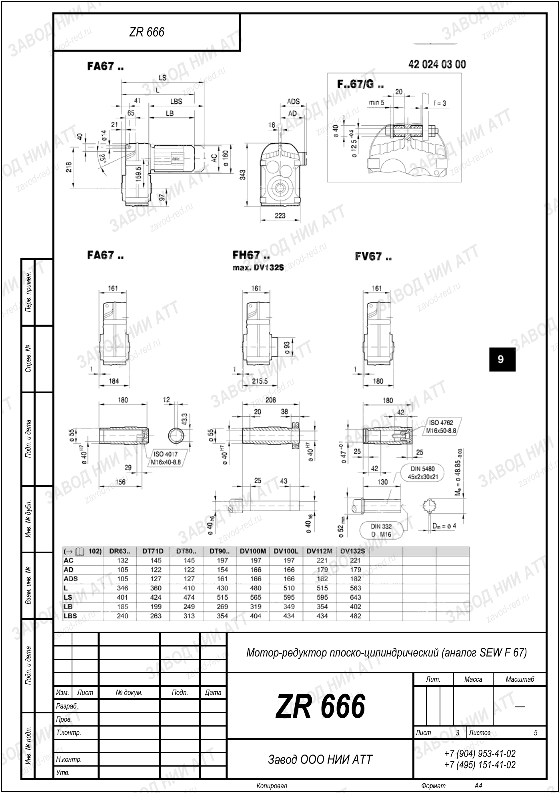

Собственное производствоПромышленные редукторы для производителей оборудования•Отгрузка по всей России•Аналоги SEW, NORD, Bonfiglioli без переделки рамы•Расчёт и КП за 15 минут•Гарантия 36 месяцевПромышленные редукторы для производителей оборудования•Отгрузка по всей России•Аналоги SEW, NORD, Bonfiglioli без переделки рамы•Расчёт и КП за 15 минут•Гарантия 36 месяцев
Главная›Блог›Ремонт или замена редуктора SEW на аналог
Аналоги импорта · SEW
Ремонт или замена редуктора SEW на аналог ZR
Инженеры Завода Редукторов · производство и подбор аналогов
Когда редуктор SEW выходит из строя, перед службой эксплуатации встаёт выбор: ремонтировать импортный узел или заменить его на доступный аналог. У каждого пути своя цена — во времени, деньгах и рисках повторного отказа.
Мы, производитель ZR (ООО «НИИ АТТ», Челябинск), не агитируем слепо против ремонта. Задача статьи — дать критерии, по которым решение принимается взвешенно, и показать, как подбирается замена ZR, если она оправдана.
Когда ремонт оправдан
Ремонт имеет смысл, если повреждение локальное: замена подшипников, сальников, одной шестерни при доступности запчастей. Если корпус цел, а геометрия валов не нарушена, восстановление может быть быстрым.
Однако для импортного SEW ключевой риск — сроки и наличие оригинальных зубчатых пар. Ожидание поставки может остановить линию на недели.
Когда выгоднее замена
Замена на аналог оправдана при разрушении корпуса, износе нескольких ступеней, отсутствии запчастей или систематических отказах. В этом случае восстановление дороже и не гарантирует ресурса.
Отечественный ZR закрывает вопрос доступности: типоразмер подбирается под ваши параметры, а сроки поставки короче, чем ожидание оригинальных комплектующих SEW.
Типовое исполнение соосного привода
Критерии сравнения
Сравнивать стоит по срокам простоя, ожидаемому ресурсу после вмешательства, доступности запчастей и рискам повторного отказа. Простой оборудования часто стоит дороже самого редуктора.
Мы не приводим здесь конкретных цен — они зависят от типоразмера, исполнения и объёма. Ориентируйтесь на совокупную стоимость владения, а не только на цену узла.
Как подобрать ZR под замену
Подбор идёт по трём осям: крутящий момент T = 9550 · P · КПД / n2, передаточное число i = n1 / n2 и присоединительные размеры. Для серии R есть ориентиры: R37 → ZR 636, R57 → ZR 858, R77 → ZR 979.
Эти соответствия приблизительны. Точный типоразмер под вашу нагрузку и геометрию рассчитывает калькулятор подбора — им и следует пользоваться для финального выбора.
Расчёт момента и сервис-фактора перед подбором
Установка без переделки
Если высота оси вала, тип выходного вала и крепёжные отверстия ZR совпадают с исходным SEW, замена монтируется на штатное место без доработки рамы и муфт.
При расхождении геометрии изготавливается переходная плита. Это дешевле и быстрее, чем перепроектировать привод целиком.

Габаритный и присоединительный чертёж SEW F67, лист 3 · аналог ZR 666 — все чертежи SEW
Честно о том, что вы получаете
ZR — функциональный аналог, а не оригинальный SEW. Мы производим его в Челябинске и отвечаем за соответствие заявленным моменту и передаточному числу.
Такой подход снимает зависимость от импортных поставок и упрощает дальнейшее обслуживание: запчасти и консультации доступны напрямую у производителя.
Ремонт против замены: критерии
Критерий
Ремонт
Замена на ZR
Сроки
Зависят от поставки запчастей
Определяются производством ZR
Ресурс
Частичный, зависит от объёма
Как у нового узла
Доступность
Риск при импортных деталях
Отечественная поставка
Ориентиры подбора ZR
SEW
ZR (ориентир)
R37
ZR 636
R57
ZR 858
R77
ZR 979
Подберём аналог SEW под вашу задачу. Введите параметры в калькуляторе подбора — покажем нашу модель ZR и рассчитаем цену. Общее по замене импорта — импортозамещение.
Вопросы и ответы
Частые вопросы: SEW и аналоги ZR
Что дешевле — отремонтировать SEW или заменить?
Зависит от характера поломки и доступности запчастей. При локальном повреждении дешевле ремонт; при разрушении корпуса или отсутствии деталей выгоднее замена на ZR. Считайте совокупную стоимость с учётом простоя.
Сколько ждать замену ZR?
Сроки определяются производством в Челябинске и обычно короче ожидания оригинальных комплектующих SEW. Точный срок зависит от типоразмера и исполнения.
ZR встанет на место SEW без переделки?
Если совпадают высота оси вала, тип выходного вала и крепёжные отверстия — да. Иначе изготавливается переходная плита.
Как подобрать типоразмер ZR?
По моменту T = 9550·P·КПД/n2 и передаточному i = n1 / n2. Для серии R есть ориентиры R37→163, R57→185, R77→197, но точный выбор даёт калькулятор.
Даёте ли вы гарантию на аналог?
Мы отвечаем за соответствие ZR заявленным параметрам по моменту и передаточному числу. Условия гарантии уточняются при заказе у производителя.
Это оригинальный SEW?
Нет. ZR — российская марка (ООО «НИИ АТТ», Челябинск), функциональный аналог. Мы не выдаём изделие за оригинал.
Можно ли сохранить двигатель?
Да, если сохранить входной фланец под стандартный двигатель. Тогда меняется только редуктор, а привод остаётся прежним.
Выбор между ремонтом SEW и заменой на ZR решается по срокам, ресурсу и доступности запчастей, а не по одной лишь цене узла.
Подробнее: характеристики, таблицы и полезные ссылки
Ремонт оправдан при локальном повреждении и наличии деталей; замена на аналог ZR — при разрушении корпуса, износе ступеней или дефиците импортных комплектующих. Ключевой фактор — стоимость простоя, которая нередко превышает цену самого редуктора.
Подбор замены ведётся по моменту T = 9550 · P · КПД / n2 и передаточному i = n1 / n2. Ориентиры серии R (R37 → ZR 636, R57 → ZR 858, R77 → ZR 979) приблизительны — точный типоразмер даёт калькулятор. Производитель ZR — ООО «НИИ АТТ», Челябинск; это функциональный аналог, а не оригинал SEW.
Пришлите фото или чертёж старого редуктора — изготовим аналог с теми же присоединительными. Переходной фланец или спецвал — спроектируем под вашу геометрию.
Какие документы получите с редуктором?
Паспорт изделия с характеристиками, декларация ЕАС, сертификат ГОСТ 31592-2012. Гарантия 36 месяцев — при поломке меняем по договору.
Подберём аналог SEW под вашу задачу
Рассчитаем замену по присоединительным размерам, пришлём КП и сроки. Производство ООО «НИИ АТТ», гарантия 36 месяцев.
Рекомендуете наши редукторы коллегам, заказчику или своему отделу снабжения? За каждый состоявшийся заказ по вашей рекомендации выплачиваем 5% от суммы — реферальное вознаграждение переводом на карту. Прозрачный договор, работа со снабженцами и проектными отделами напрямую, отгрузка от производителя (ООО «НИИ АТТ», Челябинск).